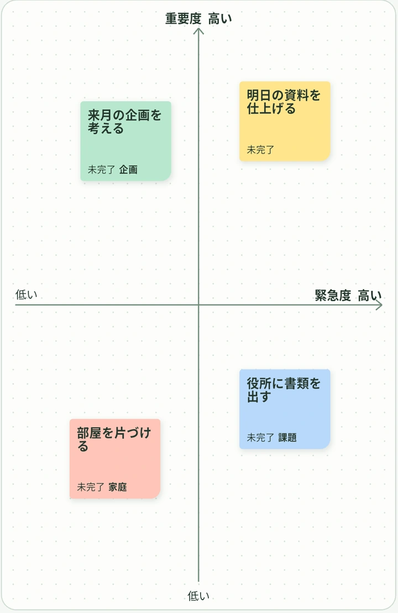
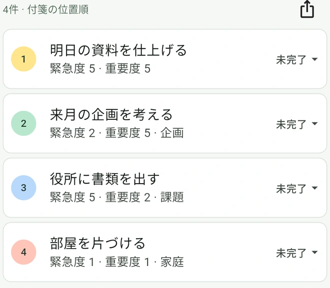

やることが多い。
何から始める？
付箋を緊急度と重要度で整理すると、優先順のTODO一覧が自動でできます。


付箋からTODO一覧へ。
-
書き出す
「明日の資料を仕上げる」など、やることを一枚ずつ付箋に書きます。
-
ボードに貼る
急ぐことは右へ。大事なことは上へ。付箋を動かして見比べます。
-
TODO一覧を見る
貼った位置で順番が決まります。取りかかったら進捗も記録できます。

よくある質問
緊急度と重要度はどう違いますか？
緊急度は「どれだけ早く対応が必要か」、重要度は「結果や目標にどれだけ影響するか」です。明日使う資料は右上に、早めに考えておきたい来月の企画は左上に置けます。
TODOの優先順位はどう決まりますか？
付箋の位置から決まる緊急度と重要度の合計が高い順に並びます。同点なら重要度が高い付箋が先です。順番を変えたいときは、ボードに戻って付箋を動かします。
アカウント登録は必要ですか？
登録不要で使えます。ボード・付箋・添付ファイルは端末内に保存され、ペタTODOから外部サーバーに送信されません。
付箋の整理や書き出しには何ができますか？
色とラベルで分類でき、書式付きメモや複数のファイルを付箋に追加できます。進捗は「未完了」「着手」「完了」の3段階で、完了した付箋はTODO一覧に残ります。TODO一覧はCSV・PDF・PNG、ボードはPDF・PNGで書き出せます。